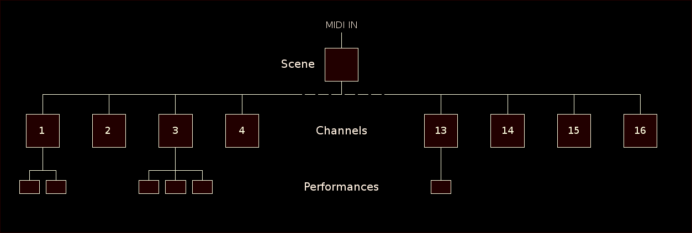

- Overview
- Quick Start Guide
- GUI Frame basics
- Skins
- Scenes
- Channels
- Properties
- Performances
- Instruments
- Xolotl Pattern Generator
Top
Overview
Features
- Multiple Keymodes
- Alternate Tunings
- Layers and Key-splits
- Maping functions for MIDI velocity, controllers, channel pressure and pitch bend
- Program banks
- Random patch generation
Each scene has 16 child nodes corresponding to the 16 MIDI Channels and each channel has zero or more child nodes called Performances.
A performance may be viewed as a container holding an instrument. 
Each node on a Cadejo tree has a set of properties and a node automatically inherits the properties
of it's parent.
The standard properties are:
- :bend - keyword, pitch bend mapping function
- :bend-range - float, pitch bend range in cents
- :dbscale - float, amplitude scale in db
- :key-range - tuple [low, high], limits active key range
- :pressure-bias - float, value added to channel pressure events
- :pressure-curve - keyword, channel pressure mapping function
- :pressure-scale - float, channel pressure scal factor
- :scale-id - keyword, tuning table selection
- :transpose - int, transposition in half-steps
- :velocity-map - keyword, velocity mapping function
Properties related to MIDI controller events are defined at the performance level.
Generally if both a parent and child node define the same property, then the value given in the child node will be used.
As a concrete example consider the illustration below. At the Scene level :bend-range is set to 200 (whole tone).
At Channel 1 :bend-range is set to 700 (a 5th) and at Performance B :bend-range is set to 1200 (an octave),
no other node sets a value for :bend-range

Pitch bend events on Channel 1 are sent to both Performance 'A' and 'B'. Performance 'A' has a range of 700 inherited from Channel 1
while Performance 'B' defines it's own value and has a range of 1200. Pitch bend events on all other channels will use the range of 200 established by the scene object.
The :dbscale and :transpose properties behave differently. Instead of a child completely blocking these values from it's parent, they are added together. If Channel 1 sets transpose to 12 then all key events are shifted up an octave when presented to Performances 'A' and "B'. If 'B' then sets transpose to -5 it's effective transposition is 12-5=7.